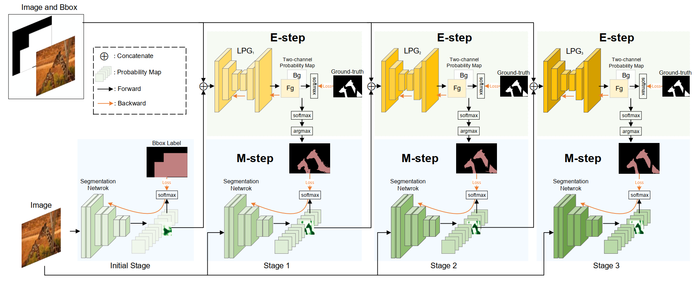
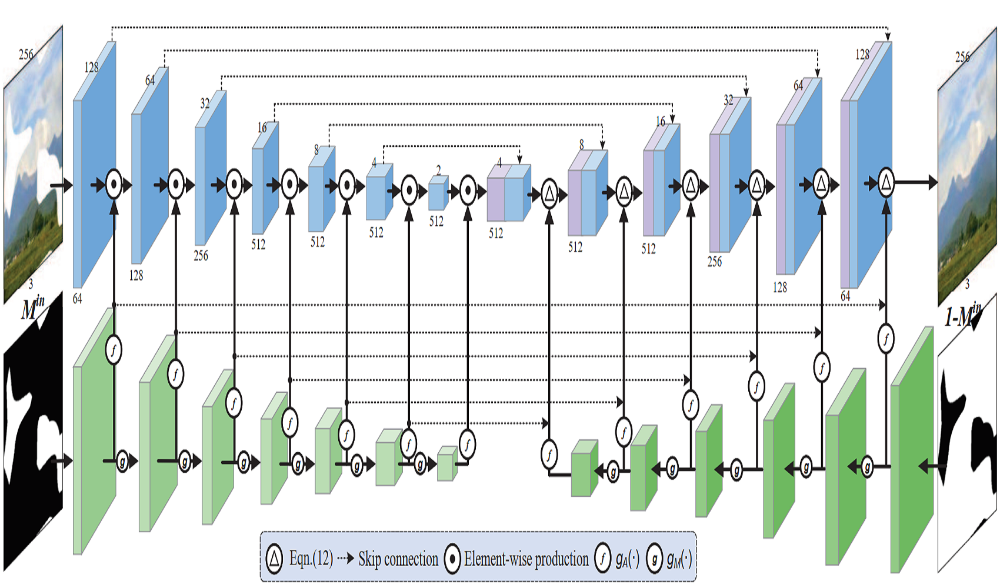
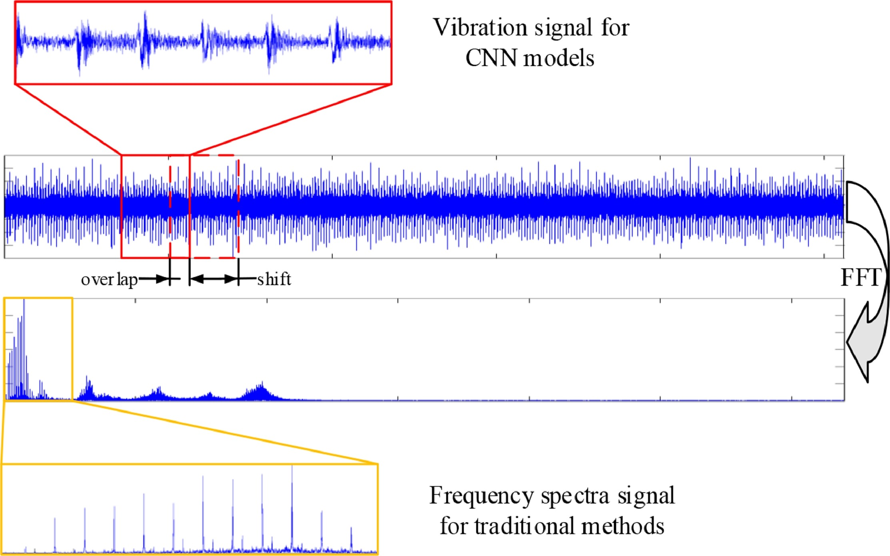

Chaohao Xie
Master Student
VPCLab@HIT
School of Computer Science
Harbin Institute of Technology, Harbin, China.
Email: viousxie [at] outlook.com
Biography
I'm a master student at SCS in Harbin Institute of Technology supervised by Prof. Wangmeng Zuo. I received my Bachelor degree from Harbin Institute of Technology, under the supervision of Prof. Shaohui Liu and Prof. Wangmeng Zuo.
I have developed strong interest in computer vision and deep learning. My current research focuses on image restoration and weakly supervised semantic segmentation.
Education Background
M.Eng.
School of Computer Science and Technology
Sept. 2019 - Present | VPCLab, Harbin Institute of Technology, Harbin, China.
Advisor: Prof. Wangmeng Zuo
B.Eng.
School of Computer Science and Technology
Sept. 2015 - Jul. 2019 | Harbin Institute of Technology, Harbin, China.
Advisor: Prof. Shaohui Liu and Prof. Wangmeng Zuo
Publications [Google Scholar]
Conference Papers
-

Learning Class-Agnostic Pseudo Mask Generation for Box-Supervised Semantic Segmentation.
Chaohao Xie, Dongwei Ren, Lei Wang, Qinghua Hu, Liang Lin, Wangmeng Zuo.
arXiv preprint arXiv:2103.05463, 2021.
@article{Xie_LPG_seg, author = {Chaohao Xie and Dongwei Ren and Lei Wang and Qinghua Hu and Liang Lin and Wangmeng Zuo}, title = {Learning Class-Agnostic Pseudo Mask Generation for Box-Supervised Semantic Segmentation}, journal = {arXiv preprint arXiv:2103.05463}, year = {2021}, }
-

Image Inpainting With Learnable Bidirectional Attention Maps.
Chaohao Xie, Shaohui Liu, Chao Li, Ming-Ming Cheng, Wangmeng Zuo, Xiao Liu, Shilei Wen, Errui Ding.
In the Proceedings of the IEEE International Conference on Computer Vision (ICCV), 2019.
@InProceedings{Xie_2019_ICCV, author = {Xie, Chaohao and Liu, Shaohui and Li, Chao and Cheng, Ming-Ming and Zuo, Wangmeng and Liu, Xiao and Wen, Shilei and Ding, Errui}, title = {Image Inpainting With Learnable Bidirectional Attention Maps}, booktitle = {Proceedings of the IEEE/CVF International Conference on Computer Vision (ICCV)}, month = {October}, year = {2019} }
Journal Papers
-

ACDIN: Bridging the gap between artificial and real bearing damages for bearing fault diagnosis.
Yuanhang Chen, Gaoliang Peng, Chaohao Xie, Wei Zhang, Chuanhao Li, Shaohui Liu.
Neurocomputing, Volume 294, 2018.
@article{CHEN201861, author = {Yuanhang Chen and Gaoliang Peng and Chaohao Xie and Wei Zhang and Chuanhao Li and Shaohui Liu}, title = {ACDIN: Bridging the gap between artificial and real bearing damages for bearing fault diagnosis}, booktitle = {Neurocomputing}, month = {June}, year = {2018} }Experience
Research Intern
Mar. 2019 - Jun. 2019 | Department of Computer Vision Technology (VIS), Baidu Inc
Developed deep CNNs-based method for multi-frame video super resolution task, including a spatial transformer module for alignment, a densely connected network sr module, and a self-ensemble module.Honors & Awards
Huawei Scholarship (Only five of the total 270 students get) | HIT2019Outstanding Student Recommended for Admission | HIT2018National Encouragement Scholarship | HIT2016Academic Services
Conference Reviewer
IJCAI 2021, CVPR 2021, ICCV 2021Journal Reviewer
The Visual Computer (TVCJ)